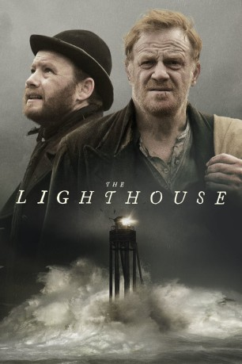

#11141 The Lighthouse
Auszeichnungen: 1 BAFTA-Awards gewonnen
 
 IMDB-Wertung: 5.1 / 10
IMDB-Wertung: 5.1 / 10  Metascore: 58
Metascore: 58 
Thomas Griffith und Thomas Howell sollen das Licht eines Leuchtturmes abseits der walisischen Küste warten. Am Zielort angekommen schneidet ein Monate andauernder Sturm die beiden Techniker an der Irischen See vom Rest der Welt isoliert. Unter mysteriösen Umständen kommt einer der beiden durch einen Unfall ums Leben. Das bringt die Lage zur Eskalation. Wahnsinn und Angst werden die Herausforderungen des Überlebenden.
Jahr: 2016
Dauer: 102 Minuten
FSK: 16
Land: England Studio: Lighthouse Home EntertainmentTonspuren: DTS - ,
Untertitel:
Auflösung: 1080p (1920x800) Größe: 3594 MB
Genre: Thriller
Regisseur: Chris Crow
Drehbuch: Paul Bryant, Chris Crow, Michael Jibson
Soundtrack: Mark Rutherford
Darsteller:
 Mark Lewis Jones als Thomas Griffiths
Mark Lewis Jones als Thomas Griffiths Michael Jibson als Thomas Howell
Michael Jibson als Thomas Howell Ian Virgo als Company Man #1
Ian Virgo als Company Man #1- Jason May als Company Man #2
- Gerald Tyler als MacDonald
- David Lloyd als Men In Mist
- Joshua Richards als Jones
- Fiona Franklyn als Rowers
- Stephen McDade als Fisherman
- Nathan Sussex als Taylor
- David Shillitoe als Men In Mist
- Charles Curran als Men In Mist
- Nick Pratt als Sailors In Tavern
- Dai Parsons als Sailors In Tavern
- Greg Mothersdale als Company Man 3
- Stephen Mckenna als Sailors In Tavern
- Rein Adamson als Sailors In Tavern
- Ian Davies als Sailors In Tavern
- Gerard Ginestier als Rowers
- Jefon Lewis als Sailors In Tavern
- Tim Holmes als Sailors In Tavern
- Adrian Lloyd als Sailors In Tavern
- Gareth Whieldon als Sailors In Tavern
- Tim Edwards als Cox
- Dave Constant als Sailors In Tavern
- Guy Osborne als Rowers
- Fred Brooks als Sailors In Tavern
- Jordan Wallace als Men In Mist
- Ed Buchan als Sailors In Tavern
- Steven Jones als Sailors In Tavern
- Ben Bennett als Sailors In Tavern
- Toby Hammond als Rowers
Datei: X:\2016(G-M)\Lighthouse, The (2016, FSK16, 1920x800).mkv seit 25.04.2019
Festplatte: HD 2016(A-Z)
 Es gibt insgesamt 164 Filme in der Gruppe '2016(G-M)'
Es gibt insgesamt 164 Filme in der Gruppe '2016(G-M)'